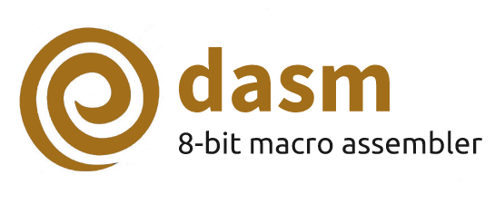

Welcome to the official home of dasm, a versatile macro assembler with support for several 8-bit microprocessors including MOS 6502 & 6507, Motorola 6803, 68705 & 68HC11, Hitachi HD6303 (extended Motorola 6801), and Fairchild F8.
Below you can download the latest dasm binaries and sources for the most common operating systems: Linux, macOS and Windows.
Latest Release (version 2.20.13 - see release notes)
| dasm-2.20.13-linux-x64.tar.gz | Compressed 64-bit executable for Linux [*] |
| dasm-2.20.13-osx-x64.tar.gz | Compressed 64-bit executable for macOS [*] |
| dasm-2.20.13-win-x64.zip | Compressed 64-bit executable for Windows [*] |
| Source code (zip) | Version 2.20.13 source code for all systems (zip) |
| Looking for a 32-bit dasm executable? Find them in the releases. | |
[*] Console-specific header files and common macros are included for the Atari 2600 VCS, the Atari 7800 and the Fairchild Channel F VES.
Code & Documentation
On GitHub you can find the latest code and also documentation in PDF  of dasm.
of dasm.
Bugs? Feature requests?
Please report bugs or feature requests on our dasm project page.
All versions of dasm are written in C. If you want to contribute we encourage you to fork dasm and send us a pull request!
History
- Matthew Dillon started dasm in 1987-1988.
- Olaf "Rhialto" Seibert extended dasm in 1995.
- Andrew "Dr.Boo" Davie maintained dasm in 2003-2008.
- Peter Fröhlich maintained dasm in 2008-2015.
- In 2019, the dasm source code and releases were moved to GitHub.